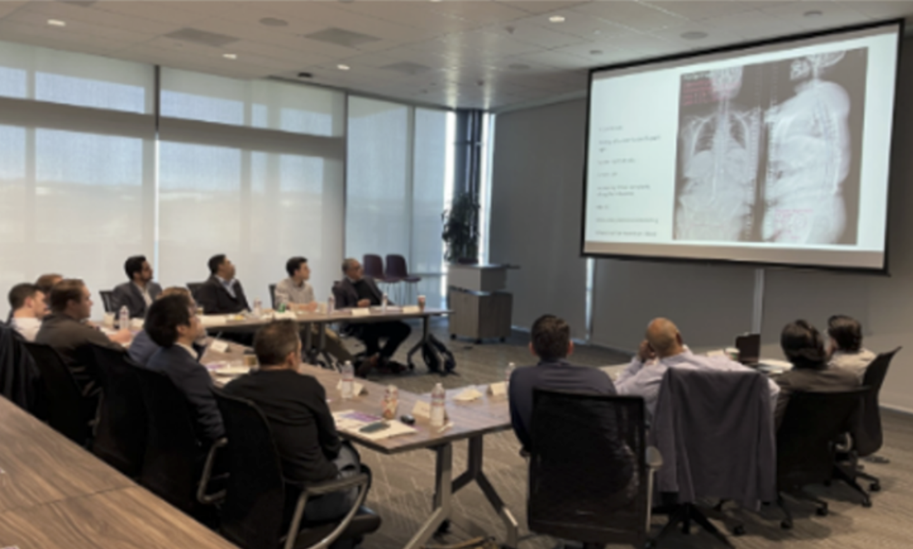

SpineBase was created to solve a frustrating yet widespread problem in spine care and research: the lack of a centralized, standardized resource for imaging measurements.
Despite the critical role of spine imaging measurements in clinical decision-making, academic studies, and surgical planning, clinicians and learners often waste time digging through scattered publications, inconsistent diagrams, and outdated videos to understand basic landmarks.
We are changing that. SpineBase is your go-to online platform for all spine-related imaging measurements. Whether you are a trainee learning Lumbar Lordosis or a seasoned provider referencing T4 Pelvic Angle, we offer step-by-step instructions and annotated images all in one place.
To make imaging measurements simple, standardized, and accessible for everyone in the spine community!
Philip Louie, MD
